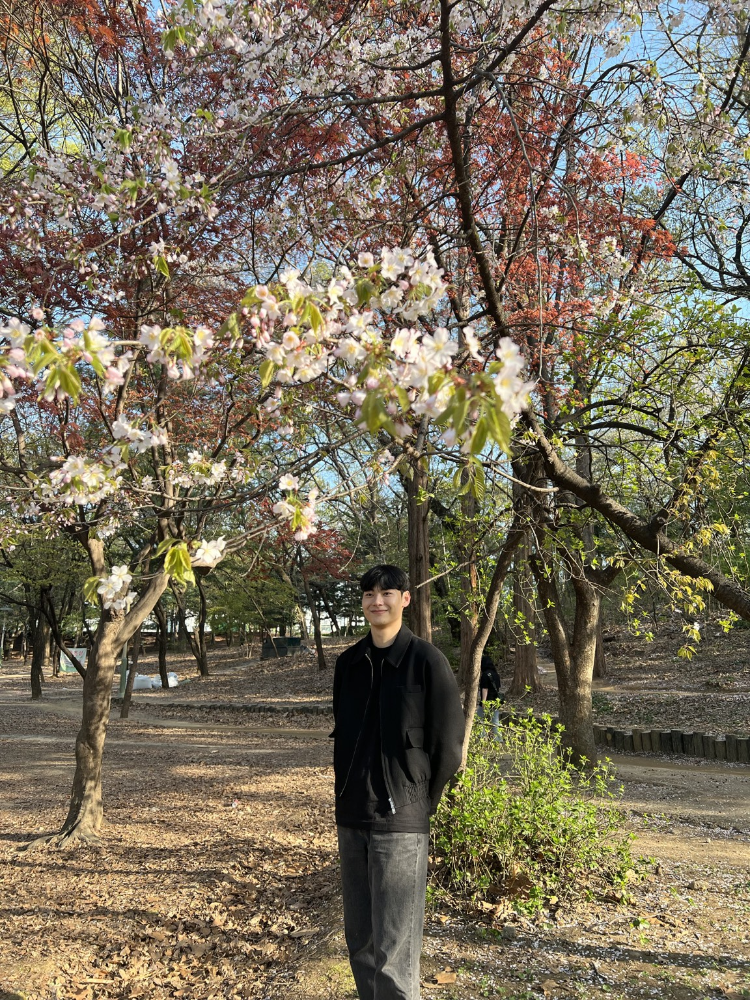

소개

안녕하세요, SSAFY 16기 정지혁입니다
다양한 아이디어를 실제 서비스로 만드는 것을 좋아합니다.
SSAFY 에 계신 분들과 다양한 프로젝트를 경험하며 함께 성장하고 싶습니다.
기술 스택
실 서비스 운영 경험을 바탕으로 프론트앤드, 백앤드, DB , 클라우드 등
다양한 기술을 사용해보며 프로젝트의 규모와 상황에 맞는 기술을 선택하였습니다.
-
Next.js
서버 사이드 랜더링 기술을 통한 SEO 최적화, 화면 로딩 속도 개선의
효과를 보기 위해 채택하였습니다. - RN / Expo iOS, Android 모바일 앱 개발 시간 단축 효과를 위해 채택하였습니다.
- MySQL 풍부한 레퍼런스, 높은 안정성, 쉬운 학습 곡선을 가지고 있어 채택하였습니다.
-
AWS
ECS , RDS , Elastic Beanstalk, cognito , cloudfront, SES , S3 등
배포부터 유지보수까지 클라우드 인프라를 관리할 수 있습니다.
프로젝트
저는 단순 구현을 넘어, 지속 가능한 프로젝트를 만들고자 노력합니다.
제가 진행했던 프로젝트 중 가장 반응이
좋은 프로젝트입니다.
임고봇
총 사용자 수 2024명이 사용중인 초등·중등·특수 임용고시 시험 대비 학습 사이트입니다.
Upstage Document Parsing API 를 활용한 문서 구조화 데이터 파싱 및 퀴즈 출제 자동화,Next.js, React Native , EXPO 를
활용하여 웹 / iOS,Android앱을 동시 운영중입니다.
리뷰인코리아
한국에서의 일상을 글로벌 사용자들에게 소개하는 블로그형 웹사이트입니다.
Next.js 와 i18n , OpenAI API 를 사용하여
17개 언어 번역 자동화를 구현하였습니다.
문제 해결 방식
문제가 발생했을 때, 발생 원인과 앞으로의 확장을 염두에 두고 가장 좋은 해결책을 고민하는 편입니다.
성능 문제는 Lighthouse 점수 하나로 판단하지 않습니다. 실제 화면에서 중요한 콘텐츠가 언제 보이는지, 입력에 얼마나 빠르게 반응하는지, 불필요한 JavaScript가 사용자 기기에서 어떤 부담을 만드는지를 함께 확인합니다. 해결책 역시 라이브러리 추가보다 데이터 구조 단순화, 렌더링 범위 축소, 캐시 정책 정리처럼 원인에 가까운 변경을 우선합니다.
앞으로
홍길동은 프론트엔드를 화면 구현에 한정하지 않고 제품과 시스템 사이를 연결하는 역할로 바라봅니다. 브라우저 렌더링, 네트워크, 서버 사이드 렌더링과 웹 성능에 대한 이해를 계속 넓히며, 사용자가 체감하는 품질과 팀이 유지할 수 있는 구조를 함께 개선하고자 합니다.
새로운 기술을 빠르게 도입하는 것보다 문제에 적합한 기술을 선택하고 그 선택을 설명할 수 있는 개발자를 지향합니다. 작고 명확한 개선을 반복하며 오래 사용할 수 있는 제품을 만드는 것이 홍길동의 다음 목표입니다.